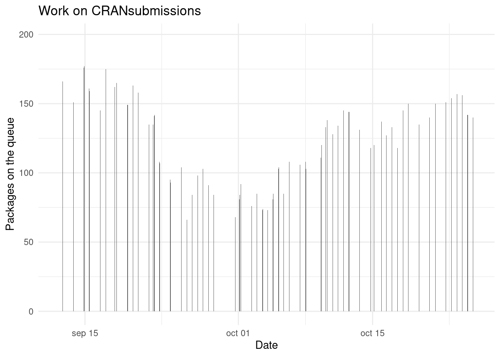
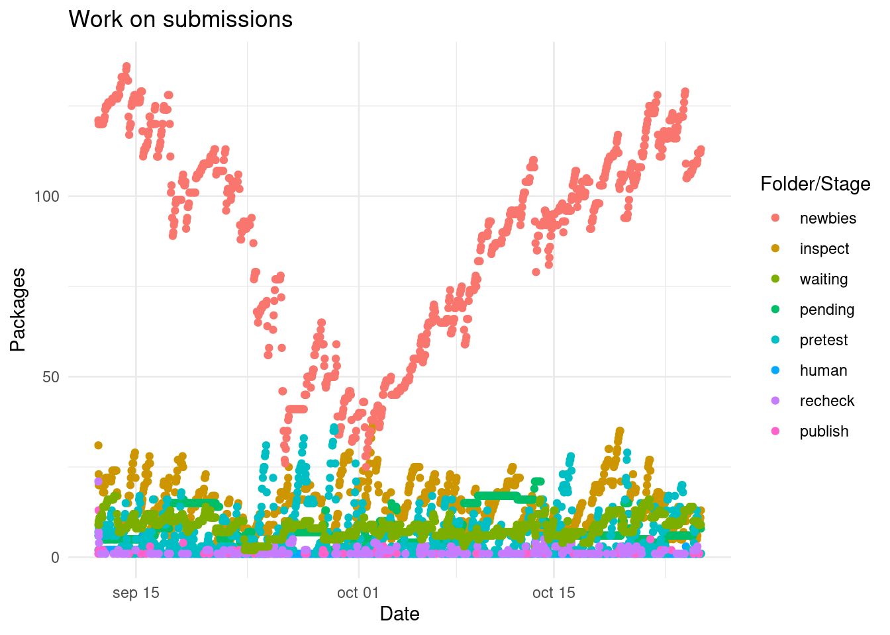
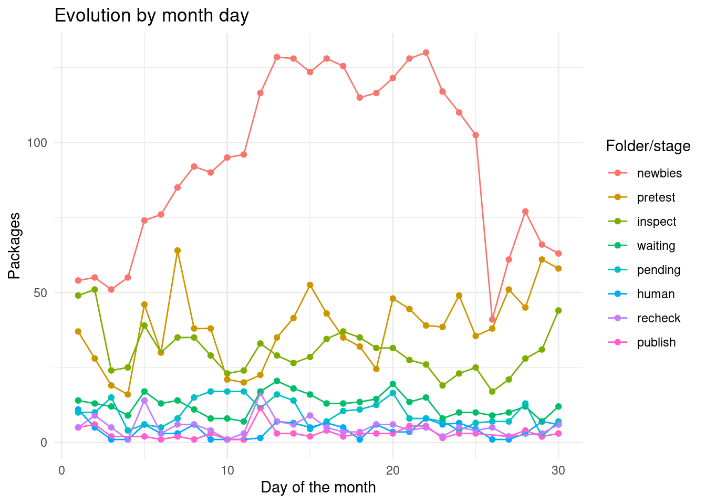
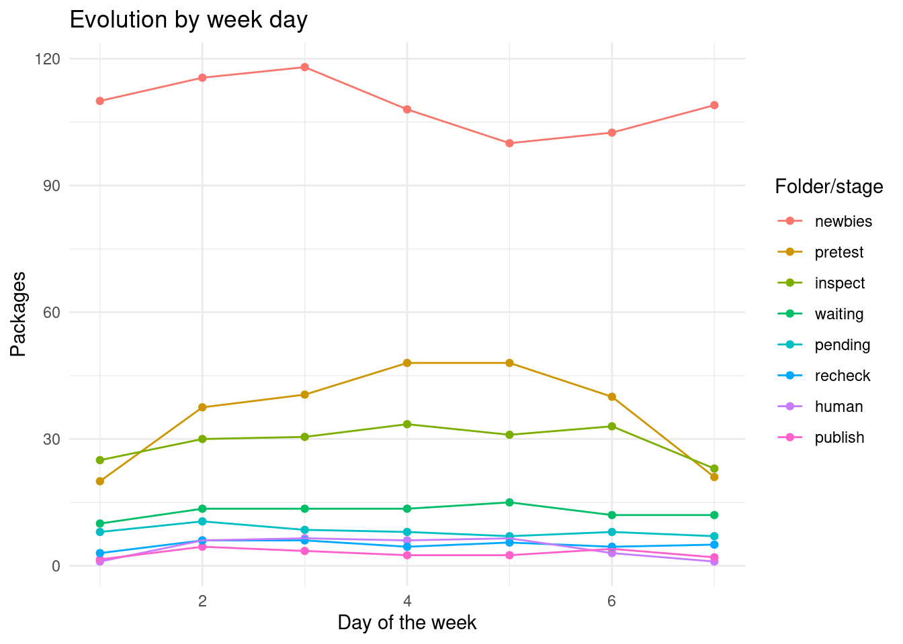
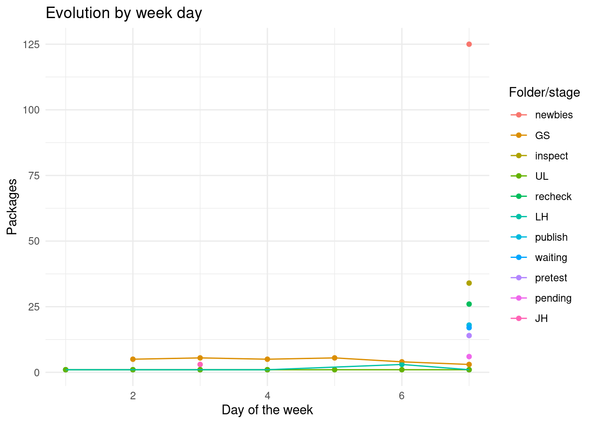

cransays is a package to check package submissions which on the online documentation provides a dashboard which is updated each hour. At the same time recently (since 2020/09/12) the status of the queues and folders of submissions are stored. Using this information and the recent script provided by Tim Taylor I’ll check how are the submissions on CRAN.
path_zip <- here::here("static", "cransays-history.zip") # From downloading the cransays repository branch history
dat <- unzip(path_zip, exdir = "static")
csv <- dat[grepl("*.csv$", x = dat)]
dates <- gsub("cran-incoming-(.+)\\.csv", "\\1", basename(csv))
date <- as.POSIXct(dates, format = "%Y%m%dT%H%M")
f <- sapply(csv, read.csv)
m <- function(x, y) {
merge(x, y, sort = FALSE, all = TRUE)
}
updates <- Reduce(m, f)
write.csv(updates, file = "static/cran_till_20201025.csv", row.names = FALSE)cran_submissions <- read.csv(here::here("static", "cran_till_20201025.csv"))
col_names <- c("package", "version", "snapshot_time", "folder", "subfolder")
cran_submissions <- cran_submissions[, col_names]
library("tidyverse")
## ── Attaching packages ─────────────────────────────────────── tidyverse 1.3.0 ──
## ✓ ggplot2 3.3.2 ✓ purrr 0.3.4
## ✓ tibble 3.0.4 ✓ dplyr 1.0.2
## ✓ tidyr 1.1.2 ✓ stringr 1.4.0
## ✓ readr 1.4.0 ✓ forcats 0.5.0
## ── Conflicts ────────────────────────────────────────── tidyverse_conflicts() ──
## x dplyr::filter() masks stats::filter()
## x dplyr::lag() masks stats::lag()
library("lubridate")
##
## Attaching package: 'lubridate'
## The following objects are masked from 'package:base':
##
## date, intersect, setdiff, union
cran_submissions$snapshot_time <- as.POSIXct(cran_submissions$snapshot_time)cran_submissions <- cran_submissions[!is.na(cran_submissions$version), ]
theme_set(theme_minimal())
cran_times <- cran_submissions %>%
mutate(seconds = seconds(snapshot_time),
month = month(snapshot_time),
mday = mday(snapshot_time),
wday = wday(snapshot_time, locale = "en_GB.UTF-8"),
week = week(snapshot_time),
date = as_date(snapshot_time),
submission = paste0(package, version, collapse = "-"))
cran_times %>%
group_by(folder, snapshot_time) %>%
summarize(packages = n_distinct(package)) %>%
group_by(snapshot_time) %>%
summarize(n = sum(packages)) %>%
ggplot() +
geom_col(aes(snapshot_time, n)) +
labs(x = "Date", y = "Packages on the queue",
title = "Work on CRANsubmissions")
## `summarise()` regrouping output by 'folder' (override with `.groups` argument)
## `summarise()` ungrouping output (override with `.groups` argument)
cran_times %>%
group_by(folder, snapshot_time) %>%
summarize(packages = n_distinct(package),
week = unique(week)) %>%
ggplot() +
geom_point(aes(snapshot_time, packages, col = fct_reorder(folder, -packages, sum))) +
labs(x = "Date", y = "Packages",
title = "Work on submissions", col = "Folder/Stage")
## `summarise()` regrouping output by 'folder' (override with `.groups` argument)
cran_times %>%
arrange(folder, date, mday) %>%
group_by(folder, date, mday) %>%
summarize(packages = n_distinct(package),
week = unique(week)) %>%
group_by(folder, mday) %>%
summarize(packages = median(packages)) %>%
ggplot() +
geom_point(aes(mday, packages, col = fct_reorder2(folder, mday, packages, sum))) +
geom_path(aes(mday, packages, col = fct_reorder2(folder, mday, packages, sum))) +
labs(x = "Day of the month", y = "Packages", col = "Folder/stage",
title = "Evolution by month day")
## `summarise()` regrouping output by 'folder', 'date' (override with `.groups` argument)
## `summarise()` regrouping output by 'folder' (override with `.groups` argument)
cran_times %>%
group_by(folder, date, wday) %>%
summarize(packages = n_distinct(package),
week = unique(week)) %>%
group_by(folder, wday) %>%
summarize(packages = median(packages)) %>%
ggplot() +
geom_point(aes(wday, packages, col = fct_reorder2(folder, wday, packages, sum))) +
geom_path(aes(wday, packages, col = fct_reorder2(folder, wday, packages, sum))) +
labs(x = "Day of the week", y = "Packages", col = "Folder/stage",
title = "Evolution by week day")
## `summarise()` regrouping output by 'folder', 'date' (override with `.groups` argument)
## `summarise()` regrouping output by 'folder' (override with `.groups` argument)
cran_times %>%
filter(!is.na(subfolder)) %>%
group_by(subfolder, date, wday) %>%
summarize(packages = n_distinct(package),
week = unique(week)) %>%
group_by(subfolder, wday) %>%
summarize(packages = median(packages)) %>%
ggplot() +
geom_point(aes(wday, packages, col = fct_reorder2(subfolder, wday, packages, sum))) +
geom_path(aes(wday, packages, col = fct_reorder2(subfolder, wday, packages, sum))) +
labs(x = "Day of the week", y = "Packages", col = "Folder/stage",
title = "Evolution by week day")
## `summarise()` regrouping output by 'subfolder', 'date' (override with `.groups` argument)
## `summarise()` regrouping output by 'subfolder' (override with `.groups` argument)
cran_times %>%
group_by(folder, subfolder) %>%
count(sort = TRUE) %>%
ungroup() %>%
filter(!(folder == subfolder))
## # A tibble: 4 x 3
## folder subfolder n
## <chr> <chr> <int>
## 1 human UL 1011
## 2 human GS 145
## 3 human LH 111
## 4 human JH 3tidy <- cran_times %>%
group_by(submission) %>%
arrange(snapshot_time) %>%
filter(row_number() == 1 | folder != lag(folder)) %>%
mutate(elapsed = difftime(snapshot_time, lag(snapshot_time), units = "hours")) %>%
ungroup()## ─ Session info ───────────────────────────────────────────────────────────────────────────────────────────────────────
## setting value
## version R version 4.0.1 (2020-06-06)
## os Ubuntu 20.04.1 LTS
## system x86_64, linux-gnu
## ui X11
## language (EN)
## collate en_US.UTF-8
## ctype en_US.UTF-8
## tz Europe/Madrid
## date 2020-10-26
##
## ─ Packages ───────────────────────────────────────────────────────────────────────────────────────────────────────────
## package * version date lib source
## assertthat 0.2.1 2019-03-21 [1] CRAN (R 4.0.1)
## backports 1.1.10 2020-09-15 [1] CRAN (R 4.0.1)
## blob 1.2.1 2020-01-20 [1] CRAN (R 4.0.1)
## blogdown 0.21 2020-10-11 [1] CRAN (R 4.0.1)
## bookdown 0.21 2020-10-13 [1] CRAN (R 4.0.1)
## broom 0.7.2 2020-10-20 [1] CRAN (R 4.0.1)
## cellranger 1.1.0 2016-07-27 [1] CRAN (R 4.0.1)
## cli 2.1.0 2020-10-12 [1] CRAN (R 4.0.1)
## colorspace 1.4-1 2019-03-18 [1] CRAN (R 4.0.1)
## crayon 1.3.4 2017-09-16 [1] CRAN (R 4.0.1)
## DBI 1.1.0 2019-12-15 [1] CRAN (R 4.0.1)
## dbplyr 1.4.4 2020-05-27 [1] CRAN (R 4.0.1)
## digest 0.6.26 2020-10-17 [1] CRAN (R 4.0.1)
## dplyr * 1.0.2 2020-08-18 [1] CRAN (R 4.0.1)
## ellipsis 0.3.1 2020-05-15 [1] CRAN (R 4.0.1)
## evaluate 0.14 2019-05-28 [1] CRAN (R 4.0.1)
## fansi 0.4.1 2020-01-08 [1] CRAN (R 4.0.1)
## farver 2.0.3 2020-01-16 [1] CRAN (R 4.0.1)
## forcats * 0.5.0 2020-03-01 [1] CRAN (R 4.0.1)
## fs 1.5.0 2020-07-31 [1] CRAN (R 4.0.1)
## generics 0.0.2 2018-11-29 [1] CRAN (R 4.0.1)
## ggplot2 * 3.3.2 2020-06-19 [1] CRAN (R 4.0.1)
## glue 1.4.2 2020-08-27 [1] CRAN (R 4.0.1)
## gtable 0.3.0 2019-03-25 [1] CRAN (R 4.0.1)
## haven 2.3.1 2020-06-01 [1] CRAN (R 4.0.1)
## here 0.1 2017-05-28 [1] CRAN (R 4.0.1)
## hms 0.5.3 2020-01-08 [1] CRAN (R 4.0.1)
## htmltools 0.5.0 2020-06-16 [1] CRAN (R 4.0.1)
## httr 1.4.2 2020-07-20 [1] CRAN (R 4.0.1)
## jsonlite 1.7.1 2020-09-07 [1] CRAN (R 4.0.1)
## knitr 1.30 2020-09-22 [1] CRAN (R 4.0.1)
## labeling 0.4.2 2020-10-20 [1] CRAN (R 4.0.1)
## lifecycle 0.2.0 2020-03-06 [1] CRAN (R 4.0.1)
## lubridate * 1.7.9 2020-06-08 [1] CRAN (R 4.0.1)
## magrittr 1.5.0.9000 2020-08-21 [1] Github (tidyverse/magrittr@1d0559d)
## modelr 0.1.8 2020-05-19 [1] CRAN (R 4.0.1)
## munsell 0.5.0 2018-06-12 [1] CRAN (R 4.0.1)
## pillar 1.4.6 2020-07-10 [1] CRAN (R 4.0.1)
## pkgconfig 2.0.3 2019-09-22 [1] CRAN (R 4.0.1)
## purrr * 0.3.4 2020-04-17 [1] CRAN (R 4.0.1)
## R6 2.4.1 2019-11-12 [1] CRAN (R 4.0.1)
## Rcpp 1.0.5 2020-07-06 [1] CRAN (R 4.0.1)
## readr * 1.4.0 2020-10-05 [1] CRAN (R 4.0.1)
## readxl 1.3.1 2019-03-13 [1] CRAN (R 4.0.1)
## reprex 0.3.0 2019-05-16 [1] CRAN (R 4.0.1)
## rlang 0.4.8 2020-10-08 [1] CRAN (R 4.0.1)
## rmarkdown 2.5 2020-10-21 [1] CRAN (R 4.0.1)
## rprojroot 1.3-2 2018-01-03 [1] CRAN (R 4.0.1)
## rstudioapi 0.11 2020-02-07 [1] CRAN (R 4.0.1)
## rvest 0.3.6 2020-07-25 [1] CRAN (R 4.0.1)
## scales 1.1.1 2020-05-11 [1] CRAN (R 4.0.1)
## sessioninfo 1.1.1 2018-11-05 [1] CRAN (R 4.0.1)
## stringi 1.5.3 2020-09-09 [1] CRAN (R 4.0.1)
## stringr * 1.4.0 2019-02-10 [1] CRAN (R 4.0.1)
## tibble * 3.0.4 2020-10-12 [1] CRAN (R 4.0.1)
## tidyr * 1.1.2 2020-08-27 [1] CRAN (R 4.0.1)
## tidyselect 1.1.0 2020-05-11 [1] CRAN (R 4.0.1)
## tidyverse * 1.3.0 2019-11-21 [1] CRAN (R 4.0.1)
## utf8 1.1.4 2018-05-24 [1] CRAN (R 4.0.1)
## vctrs 0.3.4 2020-08-29 [1] CRAN (R 4.0.1)
## withr 2.3.0 2020-09-22 [1] CRAN (R 4.0.1)
## xfun 0.18 2020-09-29 [1] CRAN (R 4.0.1)
## xml2 1.3.2 2020-04-23 [1] CRAN (R 4.0.1)
## yaml 2.2.1 2020-02-01 [1] CRAN (R 4.0.1)
##
## [1] /home/lluis/bin/R/4.0.1/lib/R/library